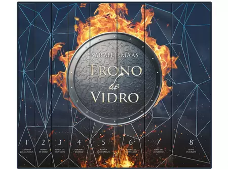
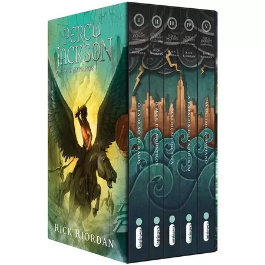

-

Estilhaça-me, conta a história pelo ponto de vista de Juliette Ferrars, uma jovem com um poder destrutivo, ao ser tocada pode causar a morte dessa pessoa. Por isso Juliette foi presa em um manicômio, por ter tirado a vida de uma criança, mesmo que por acidente
R$ 70,00
-

Trono de vidro conta a história de Caalena, a melhor assassina de Adarlam. Porém está aprisioanda e fraca. E o restante dessa emocionate história você acompanha nessa maravilhossa série literária.
R$ 160,00
-

Percy Jackson, escrita por Rick Riordan. Narra a história do jovem Percy, o filho do Posseidom e de uma humana, por isso é chamado de semi-deus. Acompanhe Percy e seus amigos nessa série literaria imcrível.
R$ 120,00